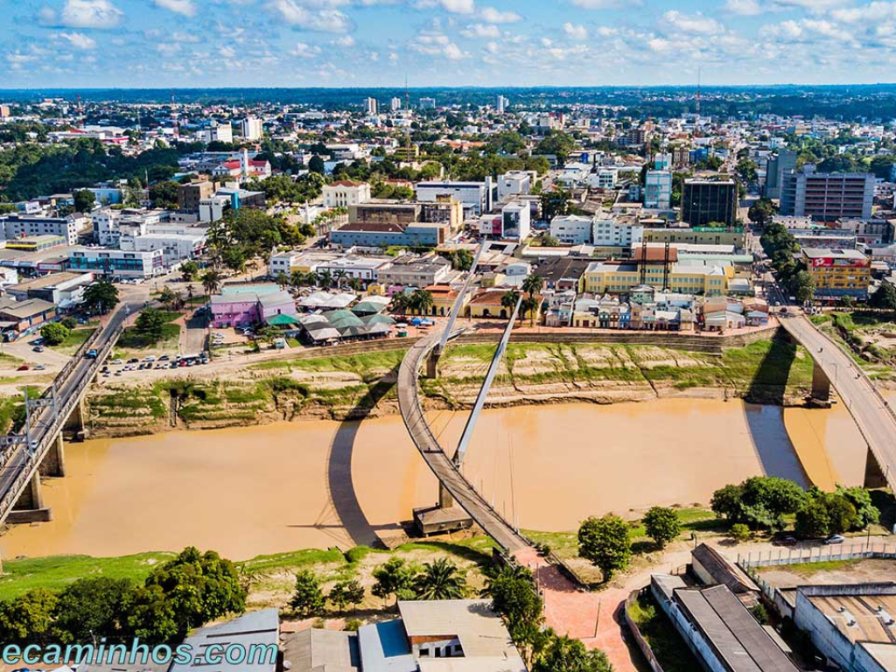

Acre é um estado localizado no extremo oeste da região Norte do Brasil e faz fronteira com o Peru e a Bolívia. Sua capital é Rio Branco, a cidade mais populosa do estado e principal centro econômico e cultural acreano. O Acre possui grande parte de seu território coberto pela Floresta Amazônica, o que contribui para a preservação ambiental e para a rica biodiversidade da região. A economia acreana é baseada principalmente no extrativismo vegetal, na agricultura, na pecuária e no comércio. O estado também é conhecido pela história de luta dos seringueiros e pela figura de Chico Mendes, importante defensor da Amazônia e do meio ambiente. Além disso, o Acre apresenta forte influência cultural indígena e nordestina, refletida em suas tradições, culinária e costumes.

Voltar